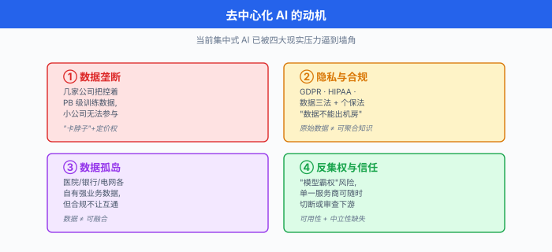
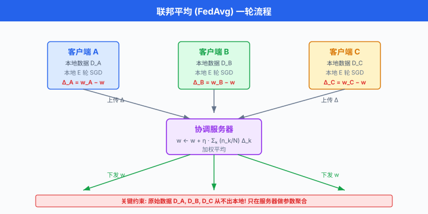
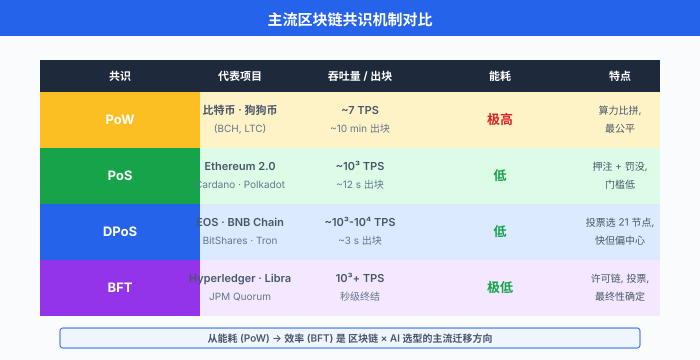
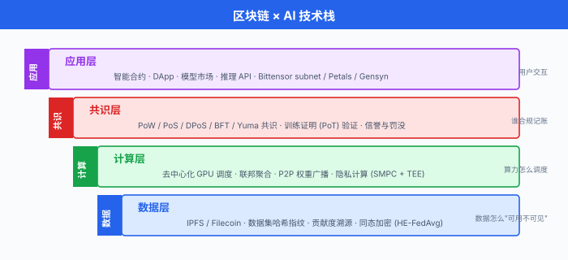
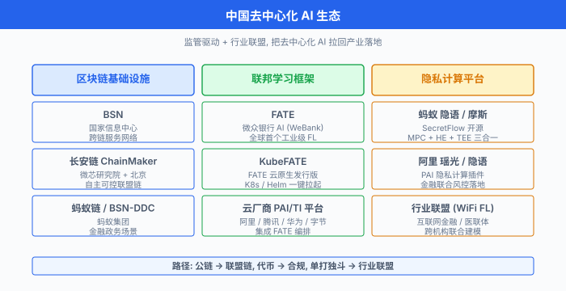

去中心化 AI¶
一句话总结：去中心化 AI 把"数据/算力/模型权重"分散到许多独立节点上协作，用联邦学习保护隐私、用区块链记账激励，让 AI 不必集中堆在大厂机房里也能成长起来。
本节为提纲式展开，我们把"去中心化 AI"拆成动机、技术栈、产业生态、挑战、未来五块，像搭乐高一样一块块拼起来.
🗺️ 本章导览¶
- 本章覆盖前沿 AI：量子 ML → 神经形态 → 太空数据中心 → 去中心化 AI → 脑机接口
- 01. 量子机器学习：量子门、变分量子算法、量子加速
- 02. 神经形态计算：脉冲神经网、类脑硬件
- 03. 太空数据中心：把算力送上 LEO 解决能源与散热
- 04. 去中心化 AI (本节)：联邦学习、区块链训练、隐私保护
- 05. 脑机接口：待补
1. 为什么需要去中心化 AI?¶
过去十年，AI 的训练几乎都长成了同一个样子：一家头部公司，几个超大的数据中心，上万张 GPU，用公开爬来的或独家拥有的数据，训练一个百亿到千亿参数的模型，然后通过 API 收钱。 这种"中心化 AI"打出了 ChatGPT 这种惊艳产品，但也带来了三个老问题。
1.1 数据隐私：法律已经把数据"圈起来"¶
数据一旦离开你的设备、离开你医院的服务器，就进入了另一套管辖。 这两年监管节奏明显加快:
- 欧盟 GDPR (General Data Protection Regulation，通用数据保护条例) 2016 年通过、2018 年 5 月 25 日正式生效。 它把"个人数据" (personal data) 的处理权交还给用户，违规最高罚到全球营收的 4% 或 2000 万欧元，取高者。
- 美国 HIPAA (Health Insurance Portability and Accountability Act，健康保险流通与责任法案) 1996 年立法，把所有可识别个体的医疗信息 (PHI, Protected Health Information) 单独管起来，未经授权披露就是违法。
- 中国 PIPL (Personal Information Protection Law，个人信息保护法) 2020 年 8 月通过、2021 年 11 月 1 日施行，跟 GDPR 的"知情同意、最小必要"高度对齐，但加了"数据出境安全评估"等本地化条款。
这三部法律加在一起，等于在墙上贴了同一句话：你的模型可以来，你的原始数据不能走. 传统"把数据汇总到中央机房"的流水线被堵死了，AI 必须换一套新打法。
1.2 数据孤岛：行业里最有价值的那些数据，都在格子间里¶
医院 A 和医院 B 各有 50 万张胸部 CT，任何一方单独训练肺结节检测模型都不够强，但因为合规要求，两家医院的数据不能"裸奔"到对方机房。 银行、运营商、电网、连锁药店……几乎所有强业务场景都面临同样的问题：业务方手里有数据，业务方也想要更好的模型，但合规、法务、品牌风险让数据出不了门。 数据孤岛不是技术问题，是组织问题、法律问题。 去中心化 AI 的核心承诺就是：让模型去找数据，而不是让数据去找模型。
1.3 反集权：一两家公司的"模型霸权"¶
2023 年 GPT-4 发布后，业界讨论最多的不是它的能力，而是"如果全世界只有 OpenAI/Anthropic/Google 三家能训练最前沿模型，我们是不是又把'水电网'垄断了一遍?". 反集权派的论点是：模型权重、推理能力、训练数据这三件事一旦高度集中，就会出现"卡脖子"和"一言堂"两种风险。 去中心化 AI 想要的是：任何有一两张 GPU 的小玩家，都能对最前沿模型做出贡献并分享收益；任何普通用户都能不依赖单一服务商就完成推理。 这是个乌托邦目标，但已经有产品 (Bittensor, Gensyn, Petals) 在做这件事的工程化。
把这三个动机总结成一句话：去中心化 AI 不是为了"去中心"而去中心，而是因为现实世界的法律、组织结构、和反垄断压力，已经把集中化路线逼到了墙角.

2. 联邦学习 (Federated Learning, FL)：数据不动，模型动¶
2.1 核心想法¶
联邦学习这个名字是 Google 2016 年前后提出来的，形象一点说：让每个参与方 (医院 A，手机用户 B，银行分行 C) 在本地用自己的数据训练，然后只把模型参数的更新量 (梯度或权重差) 上传给一个协调服务器 (aggregator). 协调服务器把所有更新量"平均"一下，再把新模型发回去，大家继续在本地训练。 整个过程里，原始数据一次也没有离开过本地，但所有人的"知识"被合在了一起。
正式一点说，联邦学习要优化下面这个分布式目标:
其中 \(K\) 是参与方数量，\(n_k\) 是第 \(k\) 方的样本数，\(N = \sum_k n_k\) 是总样本数，\(F_k(\mathbf{w}) = \frac{1}{n_k} \sum_{i \in \mathcal{D}_k} \ell(\mathbf{w}; x_i, y_i)\) 是第 \(k\) 方的本地经验损失。 注意：求解这个式子时，我们不能直接拿到 \(\mathcal{D}_k\) 里的样本，只能拿到 \(F_k\) 在当前 \(\mathbf{w}\) 处的梯度近似 \(\nabla F_k(\mathbf{w})\). 这就是联邦学习的全部约束。
2.2 FedAvg：教科书算法¶
McMahan 等人 2017 年在 AISTATS 上发表的 Communication-Efficient Learning of Deep Networks from Decentralized Data 给出了第一个能跑的联邦学习算法，叫 FedAvg (Federated Averaging). 它做的事非常简单:
服务器:
初始化全局模型 w_0
for round t = 1, 2, ... do
随机抽一批参与方 S_t
把 w_{t-1} 发给 S_t 里每个参与方
等待所有参与方返回更新
w_t = w_{t-1} + η · (1/|S_t|) Σ_{k∈S_t} Δ_k
end
客户端 k (收到 w 后):
w_local = w
for each local epoch do
for each mini-batch b in local data do
w_local = w_local - lr · ∇ℓ(w_local; b)
end
end
Δ_k = w_local - w
把 Δ_k 上传给服务器
FedAvg 的精髓在两步：① 每轮只在服务器和一部分客户端之间同步，不是全员，通信量立刻降下来；② 客户端可以在本地跑多轮 (local epoch) 再上传，让"上传一次"的通信量对应更多"梯度计算量". McMahan 等人在原论文里，用 MNIST/CIFAR/语言模型三类任务，把需要的通信轮数砍了 10-100 倍，同时模型精度不降。
形式上，FedAvg 在第 \(t\) 轮的更新可以写成:
其中 \(\mathbf{w}_t^{(k)}\) 是客户端 \(k\) 在本轮做 \(E\) 轮本地 SGD 后得到的参数。 如果所有 \(K\) 个客户端都参与，且每个客户端的本地更新量恰好是 \(\nabla F_k(\mathbf{w}_{t-1})\) 的无偏估计，那 FedAvg 在数学上就退化为标准的分布式 SGD，收敛性直接套用经典结论。 这是 FedAvg 在论文里被反复验证的事。

2.3 FedAvg 的两个继承者：FedProx 与 SCAFFOLD¶
FedAvg 在"客户端数据分布差不多"的设定下没问题，但现实里医院 A 的病人全是老年人，医院 B 的病人全是儿童，这种异质性 (heterogeneity) 会让本地更新方向互相打架。 联邦学习界把这叫 non-IID (non-independent and identically distributed)，是过去几年最热的研究问题。
-
FedProx (Li, Sahu, Zaheer, Sanjabi, Talwalkar, Smith, MLSys 2020, arXiv:1812.06127)：给本地目标加一个近端项 (proximal term)，限制本地模型不要离全局太远: $$ \min_{\mathbf{w}}\, F_k(\mathbf{w}) + \frac{\mu}{2} \lVert \mathbf{w} - \mathbf{w}_t \rVert^2 $$ 其中 \(\mathbf{w}_t\) 是本轮服务器下发的全局参数，\(\mu\) 是控制"拉扯强度"的超参数。 直观理解：客户端可以有自己的看法，但不许太离谱。
-
SCAFFOLD (Karimireddy, Kale, Mohri, Reddi, Stich, Suresh, ICML 2020, arXiv:1910.06378)：用控制变量 (control variates) 来抵消客户端梯度方向上的方差。 服务器和每个客户端各自维护一个 \(\mathbf{c}\)，服务器在每轮用所有客户端的梯度修正项做平均，客户端用这个修正项矫正自己的梯度。 SCAFFOLD 的收敛速度对客户端异质性基本免疫，缺点是通信量翻倍，因为要多传一份 \(\mathbf{c}\).
下面给一个最小的 PyTorch 风格伪代码，把 FedProx 的近端项体现出来:
# 服务器端 (FedProx aggregator)
def aggregate(global_w, client_deltas, client_sizes):
total = sum(client_sizes)
agg = sum(d * (n / total) for d, n in zip(client_deltas, client_sizes))
return global_w + lr * agg # 加权平均后更新
# 客户端 (FedProx local update)
def local_update(global_w, local_data, mu=0.01, local_epochs=5):
w = global_w.clone().requires_grad_(True)
opt = torch.optim.SGD([w], lr=0.01)
for _ in range(local_epochs):
for x, y in local_data:
opt.zero_grad()
loss = cross_entropy(model(x, w), y)
# 关键: FedProx 的近端项
prox = (mu / 2.0) * torch.norm(w - global_w) ** 2
(loss + prox).backward()
opt.step()
return (w - global_w).detach() # 只把"变化量"上传
2.4 Cross-silo vs Cross-device：两种场景两种玩法¶
联邦学习的部署形态差异巨大，一般按参与方数量与稳定性分成两类:
| 维度 | Cross-silo (跨机构) | Cross-device (跨设备) |
|---|---|---|
| 参与方数量 | 2 ~ 100 | 10^3 ~ 10^9 |
| 算力 | 每方一个 GPU 集群，几乎在线 | 每方一台手机，随时可能掉线 |
| 典型场景 | 医院联合、银行风控、医保建模 | 键盘预测、语音唤醒、Siri/Google Assistant |
| 同步假设 | 每轮全员到齐，同步聚合 | 每轮只抽 1% 客户端，异步聚合 |
| 通信频率 | 高带宽 (局域网/专线) | 极低带宽 (Wi-Fi/4G)，要省 |
| 代表项目 | NVIDIA FLARE, FATE, IBM FL | Google Gboard, Apple iMessage 联邦训练 |
Cross-silo 的难点不在算法，在治理：谁出算力，谁出数据，模型收益怎么分，谁来背合规责任。 Cross-device 的难点在系统和工程：上百万台手机不可能同时在线，你每轮只能等那些正在充电且连上 Wi-Fi 的设备，而且它们的本地数据是非平衡的 (用户 A 天天打字，用户 B 一年没打开键盘).
3. 隐私保护技术：把"看见数据"变成"看不见数据也能学"¶
联邦学习只保证原始数据不出本地，但模型参数和梯度本身有时也会泄露信息 (gradient leakage / model inversion 攻击，这两年有不少 paper 复现过). 所以业界通常会把联邦学习跟三种"加密级"技术之一组合，进一步压低隐私风险：差分隐私、安全多方计算、同态加密。 三者各有取舍，我们一一展开。
3.1 差分隐私 (Differential Privacy, DP)¶
Dwork, McSherry, Nissim, Smith 在 2006 年的 TCC 论文 Calibrating Noise to Sensitivity in Private Data Analysis 里第一次给出 DP 的严格定义。 直觉上：对一个数据集加一点点随机噪声，让"加一条记录"和"不加这条记录"两个版本的输出分布几乎分不出来. 正式写出来:
其中 \(D, D'\) 是相邻数据集 (只差一条记录), \(\mathcal{M}\) 是随机算法，\(\varepsilon\) 是隐私预算 (越小越严格), \(\delta\) 是允许的"小概率破功"项。 业界一般说"\(\varepsilon\)-DP"指的就是 \((\varepsilon, 0)\)-DP 的纯版本。
DP-SGD (Abadi, Chu, Goodfellow, McMahan, Mironov, Talwar, Zhang, ACM CCS 2016, arXiv:1607.00133) 是把 DP 用到神经网络训练的经典算法。 核心改动是在每个 mini-batch 的梯度上裁剪 (clip) 范数 + 加噪声 (Gaussian noise)，再做下降:
其中 \(\text{clip}(\mathbf{g}, C) = \mathbf{g} \cdot \min(1, C/\lVert \mathbf{g} \rVert)\) 是把每个样本梯度范数压到 \(C\) 以内，\(\sigma\) 是噪声尺度。 直观理解：任何一个样本对最终梯度的"贡献上限"被 \(C\) 锁死，噪声 \(\sigma\) 把这个贡献进一步淹没。 通过 RDP (Rényi DP) 或 moments accountant 累加，可以得到整轮训练的 \((\varepsilon, \delta)\).
DP 在联邦学习里的典型用法叫 DP-FedAvg 或 user-level DP：服务器聚合前对每个客户端的更新做 clip + 加噪声，这样"任何单个客户端的本地数据"都享受 DP 保护。 Apple 在 iOS 上的 emoji 词频联邦训练、Google 在 Gboard 上的 next-word prediction，都用过类似方案。
3.2 安全多方计算 (Secure Multi-Party Computation, SMPC)¶
SMPC 让 \(n\) 方在不暴露各自私密输入的前提下，共同计算一个约定函数 \(f(x_1, x_2, \dots, x_n) = y\)，最后大家只拿到 \(y\)，拿不到别人的 \(x_i\). 经典工具包括秘密共享 (Shamir 秘密分享，threshold scheme)、不经意传输 (Oblivious Transfer, OT)、混淆电路 (Garbled Circuit, Yao 1986).
在联邦学习里，SMPC 常用来做"无信任聚合" (secure aggregation, Bonawitz et al., CCS 2017)：服务器想求 \(\sum_k \Delta_k\)，但不想知道任何一个 \(\Delta_k\) 单独是多少。 客户端先用成对的随机掩码 \(\text{mask}_k\) 把自己的 \(\Delta_k\) 盖起来，再上传 \(\Delta_k + \text{mask}_k\). 神奇的是，所有掩码在配对的客户端之间互相抵消，服务器最终拿到的就是真实的 \(\sum_k \Delta_k\)，而中间过程完全看不见单个 \(\Delta_k\). 通信开销大致是 \(O(n^2)\) 对密钥，当客户端上百万时就不划算了，这是 Cross-device FL 实际部署里少用 SMPC 的根本原因。
3.3 同态加密 (Homomorphic Encryption, HE)¶
HE 的承诺最迷人：你可以把加密后的密文 \(\text{Enc}(x)\) 直接交给服务器，服务器在上面做加法和乘法，把结果 \(\text{Enc}(f(x))\) 交回，你解密后得到 \(f(x)\) — 整个过程服务器从没见过明文. 直观上，这相当于"在黑箱里跑模型".
Craig Gentry 在 2009 年 STOC 论文 Fully Homomorphic Encryption Using Ideal Lattices 里给出了第一个全同态加密 (Fully HE, FHE) 构造，关键技巧叫 bootstrapping：同态运算过程中噪声会逐渐累积，累积到一定程度密文就"解不出来了"; bootstrapping 用密文自身的加密形式，在不解密的前提下把噪声刷新，让任意深度的同态运算成为可能。

HE 在联邦学习里的标准用法叫 HE-FedAvg：客户端把本地梯度 \(\Delta_k\) 用自己的公钥 \(\text{pk}_k\) 加密得到 \(\text{Enc}(\Delta_k)\)，服务器在密文域做加权和 \(\sum_k c_k \cdot \text{Enc}(\Delta_k) = \text{Enc}(\sum_k c_k \Delta_k)\)，再把聚合密文发回客户端各自解密。 缺点是开销：FHE 的密文膨胀 1000-10000 倍，单次乘法比明文慢 4-6 个数量级，实际部署里通常用部分同态加密 (Paillier：只支持加法) 或者类同态加密 (BGV, BFV, CKKS：支持有限深度乘法) 来折中。
下面给一段最简化的 HE-FedAvg 伪代码，假设用加法同态 (Paillier):
# 客户端 k
def upload_delta(delta_k, pk_k):
# 加密本地更新量
enc = [paillier.encrypt(i, pk_k) for i in delta_k]
return enc
# 服务器 (聚合器, 永远看不见明文)
def aggregate(encrypted_deltas, weights):
agg = [0.0] * len(encrypted_deltas[0])
for d, w in zip(encrypted_deltas, weights):
for i in range(len(agg)):
agg[i] = agg[i] + w * d[i] # Paillier 同态加权和
return agg
# 客户端解密
def local_decrypt(agg_cipher, sk_k):
return [paillier.decrypt(c, sk_k) for c in agg_cipher]
3.4 三种技术的取舍¶
| 技术 | 隐私强度 | 计算开销 | 通信开销 | 实用性 |
|---|---|---|---|---|
| DP (DP-SGD) | 中 (受 ε 控制) | 低 (每步 +1 次噪声) | 低 | 大，工业部署最多 |
| SMPC (SecureAgg) | 高 (密码学安全) | 中 (多轮交互) | 高 (\(O(n^2)\)) | 中，cross-silo 多 |
| HE (FHE/BFV) | 高 (密码学安全) | 高 (4-6 个数量级) | 高 (密文膨胀) | 较小，学术界为主 |
现实工程里大家经常组合：DP + FedAvg 是最稳的默认配置；SecureAgg + FL 在 Cross-silo 医疗项目里出现得多；HE + FL 则出现在对法律合规要求极严的场景 (比如金融跨境). 没有银弹，看场景。
4. 区块链 + AI：当去中心化遇到"谁付钱"的问题¶
联邦学习解决"数据不动模型动"，但还缺两块拼图：谁付 GPU 的钱 和 谁证明"我真的跑了这些计算". 区块链正好是为这两个问题造的：一是发 token 记账，二是用共识机制验证工作。 这一节我们看三个代表项目。
4.1 Bittensor：用 Yuma 共识给"有用的智能"打分¶
Bittensor 的白皮书 Bittensor: A Peer-to-Peer Intelligence Market 由 Yuma Rao 撰写，把整个网络设计成一个智能市场：矿工 (miners) 跑模型，验证者 (validators) 互相给对方的模型打分，排名高的矿工拿更多 TAO 代币。 关键创新是 Yuma 共识：验证者不再简单比"哈希谁先算出来"，而是比"谁的模型输出对其他验证者更有用". 也就是用 P2P 的方式把"集体判断智能质量"这件事写成共识协议。
技术上 Bittensor 把网络切成 subnets：每个 subnet 是一个独立任务市场 (文本生成、图像、音频、代码等)，矿工注册到某个 subnet 提供服务。 这种"分片市场"的设计让网络可以横向扩展，不同 subnet 用不同的评估标准。 到 2025 年初，Bittensor 已经运行了数十个 subnets, TAO 代币进入了主流交易所。
4.2 Petals：拼凑一台"分布式推理机"¶
Petals (Borzunov, Baranchuk, Dettmers, Ryabinin, Belkada, Chumachenko, Samygin, Raffel, 2022, arXiv:2209.01188) 解决的是另一个问题：怎么让没有 8 张 H100 的人也能跑 BLOOM-176B 这种大模型. 思路很直接：把模型的不同层 (transformer blocks) 分给不同的志愿者节点，每节点只负责几层，推理时像流水线一样把隐藏状态从第 1 层传到第 N 层。
原论文报告，BLOOM-176B 在消费级 GPU (24 GB 显存) 集群上能跑到约 1 step/秒的推理速度，比把所有权重卸载到内存 (RAM offloading) 快一个数量级。 对社区的意义是：HuggingFace 上的 BLOOM、LLaMA 类模型可以通过 pip install petals 直接调用，不需要付费 API. 这是一种"算力层的去中心化"，而非"数据层的去中心化".
4.3 Gensyn：给"训练证明"做协议层¶
Gensyn 想做的是去中心化训练市场：你有 100 GB 数据，我有空闲 GPU，通过 Gensyn 协议撮合，模型训练完了，按"实际算力贡献"结算。 它的核心技术是 AXL 协议，提供三件事:
- P2P 通信: ML 节点之间直接交换权重、梯度、信号，不经过中心服务器。
- 持久身份：每个 ML 节点在链上有持久 ID，训练过的模型可追溯到节点。
- 密码学验证：用概率证明 + 优化验证等机制，证明"这个节点真的跑了指定计算，不是抄了别人的结果". Gensyn 把这套验证协议叫做"信任层"，是整个系统的杀手锏。
Gensyn 在 2024 年完成了 a16z 领投的 4300 万美元 A 轮融资，是这个赛道目前最大的玩家之一。

4.4 三者对比¶
| 项目 | 主要场景 | 共识/协议机制 | 当前状态 (2025) |
|---|---|---|---|
| Bittensor | 智能市场，模型输出质量评估 | Yuma 共识 + subnet 分片 | 主网运行，TAO 上交易所 |
| Petals | 大模型分布式推理 | BitTorrent 式层间流水线 | 社区项目，HuggingFace 集成 |
| Gensyn | 去中心化训练市场 + 验证 | AXL 协议 + 密码学验证 | 测试网，大额融资 |
5. 中国生态：不止"联邦学习开源框架"¶
中国的去中心化 AI 生态有一个独特之处：监管驱动 + 行业联盟。 几家头部机构很早就意识到，不解决"数据合规"问题，金融、医疗、政务场景的 AI 落地就推不动。 所以中国走出来的不是 Bittensor 这种"公链叙事"，而是工业级联邦学习开源框架 + 行业联盟.
5.1 FATE：全球首个工业级联邦学习开源框架¶
FATE (Federated AI Technology Enabler) 由微众银行 (WeBank，腾讯牵头的互联网银行) AI 团队发起，2019 年正式开源，后移交到 Linux Foundation 下的 FederatedAI 社区维护。 FATE 自称是"全球首个工业级联邦学习开源框架"，支持:
- 多种算法：逻辑回归、决策树 / XGBoost、深度学习、迁移学习
- 多种安全协议：同态加密 (Paillier)、多方安全计算 (SPDZ)
- 完整工具链: FATE-Board (可视化)、FATE-Flow (调度)、FATE-Serving (在线推理)
- 多种部署形态: Docker Compose (开发)、Kubernetes (生产，即 KubeFATE)
KubeFATE 是 FATE 的云原生部署层，把 FATE 集群装进 Kubernetes，让跨云、跨数据中心的联邦学习集群可以一键拉起。 中国银行业的多个"多方风控建模"项目都跑在 FATE 上，比如多家城商行联合训练反欺诈模型、医保局联合多家医院训练 DRG 分组器。
5.2 KubeFATE 与云厂商的联邦学习平台¶
KubeFATE 由微众银行 (WeBank) AI 团队发起并开源，隶属于 Linux Foundation 下的 FederatedAI 社区 (GitHub: FederatedAI/KubeFATE)，是 FATE 的官方云原生发行版，用 Kubernetes / Helm 一键部署 FATE 集群 (据 FederatedAI/KubeFATE GitHub README 2024). 阿里云、腾讯云、华为云等在自家的 AI 平台 (如阿里云 PAI) 上集成了 FATE/KubeFATE，提供联邦学习工作流编排；字节跳动在火山引擎上也推出了类似的联邦学习服务，主要场景是广告归因与跨应用用户画像。
5.3 蚂蚁摩斯 (Antchain Morse / 隐语)¶
蚂蚁集团旗下的隐语 (SecretFlow) 开源框架，以及蚂蚁链上的摩斯 (Morse) 隐私计算平台，把 MPC/HE/TEE (可信执行环境) 三条技术路线打通，提供"数据可用不可见"的服务。 在政务数据开放 (公积金、社保、税务)、金融联合风控、医疗多中心研究这些场景里，蚂蚁摩斯都跑过真实项目。
5.4 整体观察¶
中国生态的特点可以总结成一句话：用合规驱动的"行业联盟 + 工业级框架"路线，把去中心化 AI 从"区块链故事"拉回到"产业落地故事". 这条路线不性感，但回款快、合规压力小、客户买单意愿强。 跟美国/欧洲偏"代币经济 + 学术前沿"形成鲜明对比。

6. 挑战：去中心化 AI 没那么美¶
去中心化 AI 的承诺大，坑也多。 这一节列三个最现实的。
6.1 通信开销¶
联邦学习最大的工程瓶颈是通信。 一个 7B 的语言模型，一次 forward + backward 产生的梯度大约 14 GB (FP32) 或 7 GB (BF16). 假设 100 个客户端每轮全员同步，每轮就是 700 GB-1.4 TB 的网络流量。 真实部署里会用:
- 梯度稀疏化 / 量化：只传 top-k 重要梯度 (signSGD, QSGD)
- 模型并行 + 流水线：客户端只同步某些层
- LoRA / 适配器微调：不传原始权重，只传小适配器参数
这三招把通信量压下来 1-3 个数量级，但都不是免费的：量化会伤害收敛稳定性，LoRA 会限制表达力。
6.2 统计异质性 + 模型收敛¶
医院 A、医院 B 的病人分布完全不同 (non-IID)，这种"客户端漂移" (client drift) 会让 FedAvg 类算法在本地更新阶段把全局模型拉偏，服务器一聚合反而精度更差。 学术界的应对方法包括 FedProx、SCAFFOLD、FedNova、MIME 等，但实际工业部署里，90% 的项目最终会绕开这个问题：要么把数据分布强制对齐 (用联邦清洗 + 数据配比)，要么接受精度小幅下降 (1-2 个百分点)，要么改用 split learning 这种"按层切分"而不是"按数据切分"的方案。
6.3 恶意节点与鲁棒性¶
去中心化网络里你没法相信每个节点。 三类典型攻击:
- 数据投毒 (data poisoning)：客户端故意在本地数据里塞垃圾标签，把全局模型带偏。
- 模型投毒 (model poisoning)：客户端上传"经过精心构造的恶意梯度"，让全局模型在某些样本上表现异常。
- 女巫攻击 (Sybil attack)：一个攻击者注册成上千个客户端，用多数票操纵聚合。
应对手段包括 Krum / Multi-Krum 这种基于距离的鲁棒聚合、基于 z-score 或中位数的异常检测、以及把 DP-SGD 当成"对恶意梯度也有抑制作用"的工具。 但没有银弹：真正的去中心化网络，总会假设有一定比例的恶意节点存在，这是协议设计的一部分。
7. 未来：LLM 的联邦训练与端侧小模型¶
把视角拉到 2026 年，去中心化 AI 正在发生三件事:
7.1 LLM 的联邦微调¶
全参数联邦预训练一个 100B+ 模型在通信上不现实 (光每轮同步就几十 TB)，但联邦微调 (federated fine-tuning) 在 2024-2025 年开始落地。 典型做法是:
- 全局预训练一个基础模型 (集中在某个大集群里跑).
- 客户端在本地用 LoRA / 提示微调 / 适配器微调来适配自己的数据。
- 服务器聚合的不是原始权重，而是适配器参数 (几 MB 而已).
Google、Apple、华为都在这条路线上有产品，解决的核心问题是："我想让 LLM 帮我医院写病历，但我的病历不能出医院".
7.2 端侧 (on-device) 紧凑 LLM¶
2025 年起，端侧 LLM 已经能做到 7B 模型在手机/笔记本上跑出可用速度 (Apple Intelligence 端侧版、MNN-LLM、MediaPipe LLM). 这给去中心化 AI 注入新含义：未来每个手机都是一个"联邦学习客户端"，它既是数据产生者，也是模型消费者。 个人 LLM "联邦化" 的标准协议 (类似 Matrix / Nectar / OpenFL) 正在快速发展。
7.3 区块链 AI 的两条岔路¶
一种是"激励 + 市场"路线 (Bittensor/Gensyn)，用代币奖励把分散算力聚起来；另一种是"协议层 + 可验证"路线 (Petals/AXL)，不发币，只把分布式推理/训练做成基础设施。 前者更有新闻性，后者更接近"普通工程组件". 我的判断是：长期看后者会胜出，因为它能嵌入企业 IT 栈；但短期前者会持续有叙事热度。
7.4 一句话总结未来¶
去中心化 AI 不会取代中心化 AI，但会像"开源软件不会取代 SaaS，但逼着 SaaS 降价一样"，倒逼中心化 AI 给出更多透明、更少锁定、更用户友好的方案。 这是它的真正价值，而不是"颠覆"大厂。
📌 本节要点¶
- 联邦学习 (Federated Learning, FL)：原始数据不出本地，只把模型更新量上传到协调服务器聚合，是 GDPR/HIPAA/PIPL 合规下联合建模的默认解法。
- FedAvg: McMahan 等 2017 年 AISTATS 的经典算法，服务器聚合加权平均，客户端本地多轮 SGD 后上传变化量，把通信量砍 10-100 倍。
- FedProx / SCAFFOLD：应对 non-IID 异质性的两个继承者，前者用近端项限制本地更新离全局太远，后者用控制变量抵消客户端梯度方差。
- Cross-silo vs Cross-device：前者是医院/银行级别的"少量高质量参与方"，后者是手机级别的"海量随时掉线参与方"，工程上完全不同的栈。
- 差分隐私 (Differential Privacy, DP): Dwork 等 2006 年提出的严格隐私定义，通过裁剪 + 加高斯噪声实现 DP-SGD，是工业部署最多的隐私技术。
- 安全多方计算 (SMPC)：不暴露各自输入的前提下共同计算函数，联邦学习里典型应用是 secure aggregation，通信开销 \(O(n^2)\).
- 同态加密 (HE): Gentry 2009 STOC 第一个 FHE 构造，通过 bootstrapping 让任意深度同态运算成为可能，在金融合规里出现得多。
- Bittensor / Petals / Gensyn：区块链 + AI 的三个代表，分别对应"智能市场 / 分布式推理 / 训练市场 + 验证"三个细分赛道。
- FATE / KubeFATE / 蚂蚁摩斯：中国生态的代表，走"工业级开源框架 + 行业联盟"路线，已经在金融、医保、政务场景落地。
- 挑战：通信开销大、统计异质性、恶意节点 (投毒/Sybil)，现实部署必须取舍。
- 未来: LLM 联邦微调 + 端侧紧凑 LLM + 协议层路线 (Petals/AXL)，与中心化 AI 长期共存。
参考文献 (References)¶
- McMahan, B., Moore, E., Ramage, D., Hampson, S., & Agüera y Arcas, B. (2017). Communication-Efficient Learning of Deep Networks from Decentralized Data. AISTATS 2017. arXiv:1602.05629.
- Li, T., Sahu, A. K., Zaheer, M., Sanjabi, M., Talwalkar, A., & Smith, V. (2020). Federated Optimization in Heterogeneous Networks (FedProx). MLSys 2020. arXiv:1812.06127.
- Karimireddy, S. P., Kale, S., Mohri, M., Reddi, S. J., Stich, S. U., & Suresh, A. T. (2020). SCAFFOLD: Stochastic Controlled Averaging for Federated Learning. ICML 2020. arXiv:1910.06378.
- Dwork, C., McSherry, F., Nissim, K., & Smith, A. (2006). Calibrating Noise to Sensitivity in Private Data Analysis. TCC 2006.
- Abadi, M., Chu, A., Goodfellow, I., McMahan, H. B., Mironov, I., Talwar, K., & Zhang, L. (2016). Deep Learning with Differential Privacy. ACM CCS 2016. arXiv:1607.00133.
- Gentry, C. (2009). Fully Homomorphic Encryption Using Ideal Lattices. STOC 2009.
- Borzunov, A., Baranchuk, D., Dettmers, T., Ryabinin, M., Belkada, Y., Chumachenko, A., Samygin, P., & Raffel, C. (2022). Petals: Collaborative Inference and Fine-tuning of Large Models. arXiv:2209.01188.
- Rao, Y. Bittensor: A Peer-to-Peer Intelligence Market. Bittensor Whitepaper.
- Gensyn. The Network for Machine Intelligence. https://www.gensyn.ai/
- European Parliament. (2016). Regulation (EU) 2016/679 — General Data Protection Regulation (GDPR). Official Journal of the European Union.
- U.S. Congress. (1996). Health Insurance Portability and Accountability Act (HIPAA). Public Law 104-191.
- 全国人民代表大会常务委员会。 (2021). 中华人民共和国个人信息保护法 (PIPL).
- FederatedAI / WeBank. FATE: An Industrial Grade Federated Learning Framework. GitHub: FederatedAI/FATE.
- Kairouz, P., et al. (2021). Advances and Open Problems in Federated Learning. Foundations and Trends in Machine Learning.
- Bonawitz, K., et al. (2017). Practical Secure Aggregation for Privacy-Preserving Machine Learning. ACM CCS 2017.